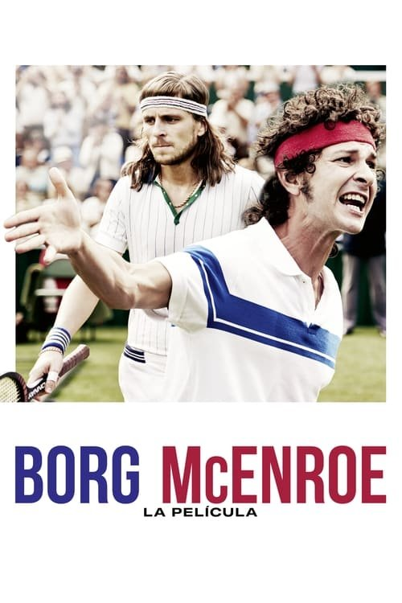

Borg McEnroe. La película (2017)
Sinopsis Rápida
Dos titanes del tenis, dos personalidades opuestas, un enfrentamiento épico en Wimbledon: Descubre la rivalidad legendaria entre Björn Borg y John McEnroe que definió una era.
Sinopsis Detallada
Borg McEnroe nos sumerge en la intensa rivalidad entre el estoico sueco Björn Borg y el temperamental estadounidense John McEnroe, dos leyendas del tenis que se enfrentaron en la electrizante final de Wimbledon de 1980. La película explora no solo su batalla en la cancha, sino también sus vidas personales, sus presiones y las estrategias que definieron su juego. Más allá de la competencia, se revela una fascinante exploración de la rivalidad deportiva y la presión de la fama, ofreciendo un retrato íntimo de dos figuras icónicas del deporte. La tensión entre ambos, sus personalidades contrastantes y la precisión de las escenas de tenis, hacen de esta película una experiencia cautivadora.
¿Por qué tenés que verla?
- Experimenta la intensidad de la rivalidad Borg vs. McEnroe en la pantalla grande.
- Las actuaciones magistrales de Shia LaBeouf y Sverrir Gudnason capturan la esencia de estos atletas.
- La película captura el impacto cultural y el legado duradero de estas leyendas del tenis.
- Un drama deportivo con una narrativa conmovedora y bien construida.
Idea Extra
Análisis comparativo de las estrategias de juego de Borg y McEnroe, con imágenes de partidos reales.